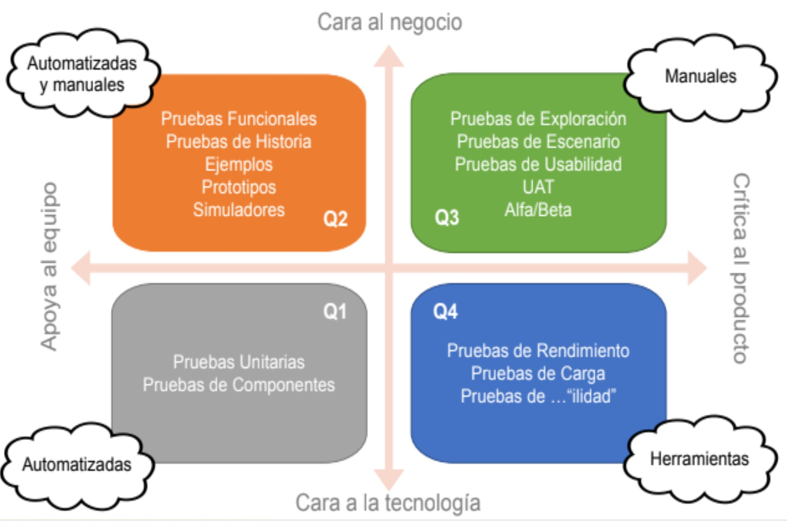

5WH+
La 5W+H es una metodología de
análisis empresarial que consiste en
contestar seis preguntas básicas:
qué (WHAT), por qué (WHY), cuándo (WHEN), dónde (WHERE), quién
(WHO) y cómo (HOW).
Esta regla
creada por Lasswell (1979) puede
considerarse como una lista de verificación mediante la cual es posible
generar estrategias para implementar
una mejora.

Cuadrantes de pruebas
-Este es el cuadrante de pruebas que maneja SQA al momento de usar 5w+h. Niveles de Prueba y TIPOS de Prueba JP&A
| NIVELES DE PRUEBA | ENFOQUE | TIPOS DE PRUEBA |
|---|---|---|
| Smoke | Probar instalación | -Pruebas de componente |
| Modular | Probar componente integrado | -Funcional -No funcional |
| Integral | Probar integración de componentes | -Historias -API o Servicios -No funcional |
| Sistema | Comprobar que los componentes y su integración funcionan adecuadamente y realizan las operaciónes realizadas |
-Funcionales -Historias -No funcionales |
Estrategia de pruebas ágiles 5w+h
| 5W+H | PREGUNTA |
|---|---|
| Why | Por que? (Propósito/Objetivo) |
| Who | Quien? (Participantes/Responsables) |
| What | Que? (Producto objeto de pruebas) |
| Where | Donde? (Lugar/Ambiente/Recursos) |
| When | Cuando? (Proceso/Tiempo) |
| How | Como ? (Pricipios/Metodos/Tecnicas) |